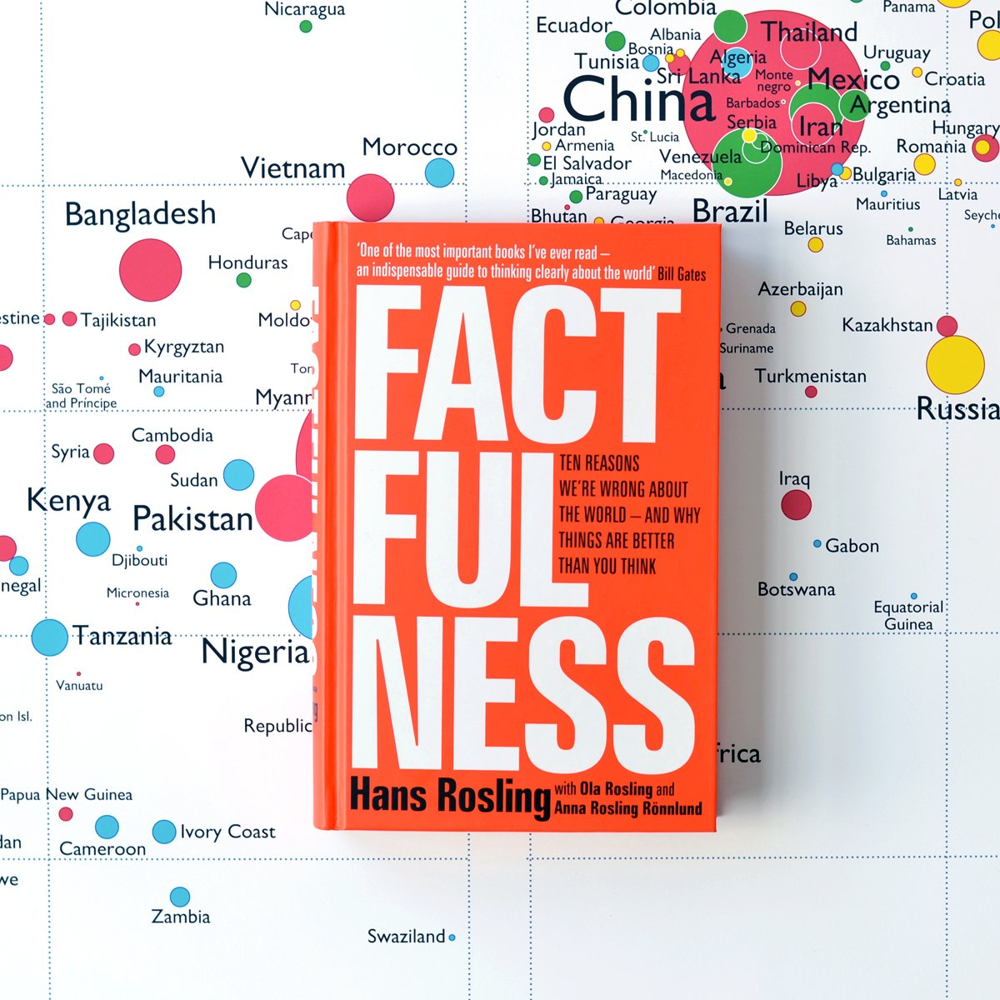

scrapbook
by Ignacio Gil Urrutia
Posts Travels & Photos Music
I stumbled upon this book written by written by the Ted Talk super star Hans Rosling (Swedish physician & academic) at the airport in Gothenburg, Sweden. Little did I know that it would change my mindset for good.
Are you convinced that the World and humanity are a total failure? Are you 100% sure that at any moment a terrorist attack is going to take place during your morning commute? You're just like me before I read this book.
How can we live our lives in peace if every step we take is conditioned by an idea made by our minds and by our collective social imagination? I have an engineering degree and I should have known better from the start. Hans taught me that we must let the numbers do to the talking and then convince our minds based on facts how it should or shouldn't feel about our World.
Now here is what you've got to do, take this test - If you feel like it, let me know how you scored... And don't be ashamed if your score sucks, later on you'll find out highly educated people (we're talking PhDs and s###...) score even worse than monkeys! Also, whether you anwser right or wrong, try to understand why you gave a certain answer. Then, regardless of your score read the book. Finally, thank me later.
Rosling is also the co-founder of the Gapminder Foundation. He developed this awesome tool called Trendalyzer with his son Ola & daughter in-law Anna Rosling. It enables visualizing data compiled by the UN and helps to understand our World Feel free to interact with their tool:
Thank you Hans Rosling and rest in peace...Published 19/08/2019
Here's a quick list of photography gear! I'm still working on it. Every product is linked below!
TedGem SD Card Reader is perfect on the go! Make sure to store pictures on your phone/computer while you're traveling. This affoardable solution can save you precious memories. Be careful, maje sure you buy a card reader sutaible for your smartphone (micro USB, USB-C, ...).
Published 16/08/2019In an era where multiple services (wix, wordpress, ...) exist to make a websites "effortlessly" I chose to create this website based on a site template that I downloaded on html5up.net Why? I wouldn't have learned anything on wix, wordpress,... and in that case I might just post on Instagram & Facebook. I also made this decisions for technical reasons I won't explain...
I hosted this website on github.com because it's free. That's another advantage of not using the websites I mentioned before. No need to pay. If you want to know how to do it watch this Youtube video.
Who needs a proper domain name? When you're starting a website/blog you don't need one. This will save you some money (again). Just customize your "github domain".
Don't forget to optimize your images, use tinypng.com.
I want to thank Andres Castillo for motivating me to build this website and giving me all the tips and tricks I mentioned before! - Go check out his website.
By the way, here's how to add Spotify playlists and songs.
Published 15/08/2019This is my first post here. I'm already looking forward to look back at this in 10 years.
"Why not just post on Facebook & Instagram?" Well I'm glad you asked... Why not learn something new? HTML, CSS JavaScript? I wanted a free format and this is was the perfect anwser.
"What type of experiences will you be sharing?" Well I'm glad you asked... Any type, but mainly learning processes. For example, I will make a post explaning how I made this website.
"Where will you be traveling to?" Well I'm glad you asked... We'll see!
"What are your interests?" Well I'm glad you asked... Travels, photography, camera gear, photo editing, computing, technology in general, work, money, you name it...
Now scroll down and enjoy!
Published 15/08/2019- Let's go watch sealions! - OK!That's exactly how this weekend was planned...
A playlist, a band or an artist and a song picked by a guy who can't distinguish the sound of a guitar from the sound a bass...


{kind=link}
{kind=link}
{kind=link}
{kind=link}
{kind=link}
{kind=link}
{kind=link}
{kind=link}
{kind=link}
{kind=link}
{kind=link}